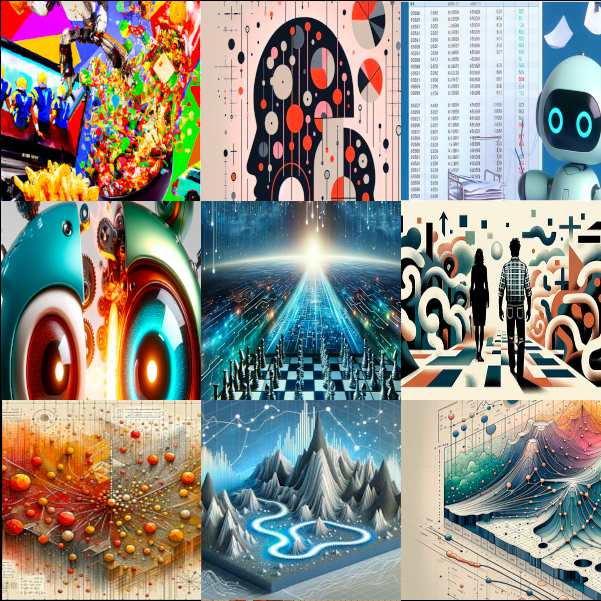

This is most evident in those already-common articles on the web where someone thought yeah I guess we should have an image here to draw the plebs in from social media, but they had patience neither to make one themselves, nor to make sure that it was any good.
These figures will often, but not always, have a very large color gamut and throw in all kinds of colors more or less at random. They will use contrast absolutely everywhere. (Both poor nōtan and aggressive use of color contrasts. A human example of such contrast is how every movie poster uses the complimentary orange/blue combination — sorry for opening your third eye about this.) There will be all kinds of visual trash everywhere: almost-text, almost-math, almost-diagrams, almost-pockets, almost-fingers, &c., &c. Nothing will be the focal point because everything is a focal point. Nothing is detailed because everything is detailed.
I’m not exactly saying the images are bad. They are very impressive in the same way that generative text is: On the surface it looks like someone worked hard on them. I might say that they are in poor taste, but you can’t speak of taste with a random number generator. Yet it is a problem of taste and intention. The robot had no taste nor intention because it can’t have those things. The person who instructed the robot clearly had no taste nor intention or they would not have used the shitty illustration; they would have refined their prompt or the image itself until it got better.
Below I made a small atrocity exhibition grabbed haphazardly from two websites known to have edutainment type blog posts. I’m sorry for violating your eyes with this; I’m getting a little nauseous myself looking at the preview. But it should be clear that no human being with any degree of intention could have made these.

Backlinks: